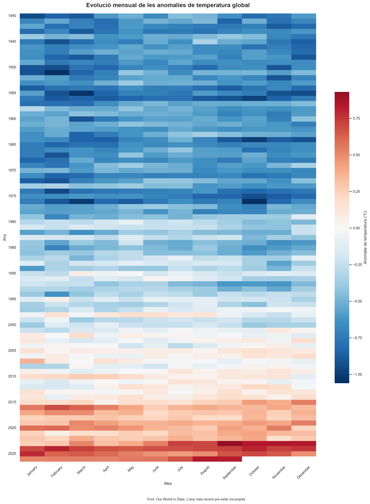
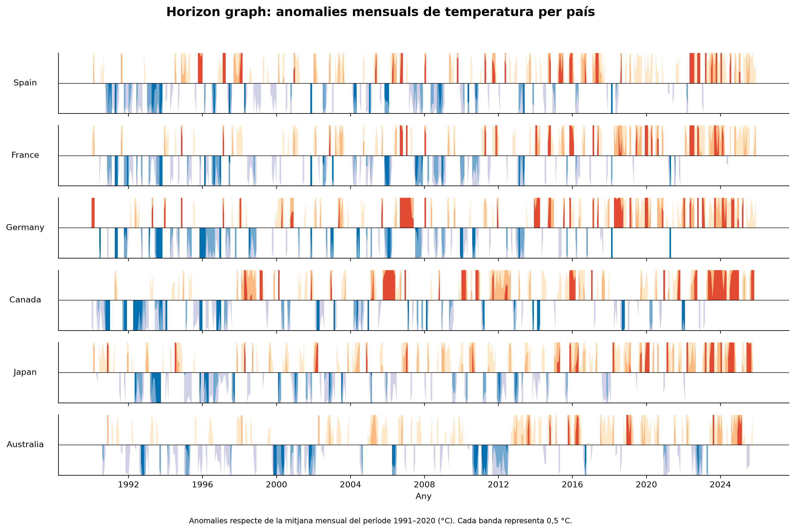

1. Heatmap: anomalies de temperatura global
El mapa de calor representa les anomalies mensuals de temperatura global al llarg dels anys. Els colors permeten distingir les anomalies positives i negatives i identificar patrons temporals.

2. Diagrama de Gantt: projectes europeus
El diagrama de Gantt representa les dates d'inici i finalització de 20 projectes europeus de recerca. Permet comparar-ne la durada i observar els períodes de solapament.
Obrir el diagrama de Gantt interactiu3. Horizon graph: anomalies de temperatura per país
Aquesta visualització compara les anomalies mensuals de temperatura de sis països entre 1990 i 2025. Les bandes de color permeten observar les variacions positives i negatives en un espai vertical reduït.
